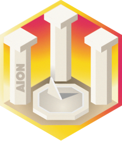
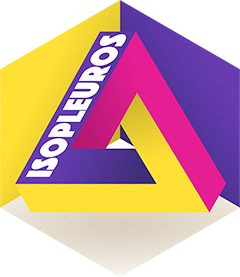

Packages
The tesselle packages can be downloaded and installed from CRAN.
Count data
tabula
 An easy way to examine archaeological count data. tabula provides several tests and measures of diversity: heterogeneity and evenness (Brillouin, Shannon, Simpson, etc.), richness and rarefaction (Chao1, Chao2, ACE, ICE, etc.), turnover and similarity (Brainerd-Robinson, etc.). The package make it easy to visualize count data and statistical thresholds: rank vs. abundance plots, heatmaps, Ford (1962) and Bertin (1977) diagrams. Read the doc…
An easy way to examine archaeological count data. tabula provides several tests and measures of diversity: heterogeneity and evenness (Brillouin, Shannon, Simpson, etc.), richness and rarefaction (Chao1, Chao2, ACE, ICE, etc.), turnover and similarity (Brainerd-Robinson, etc.). The package make it easy to visualize count data and statistical thresholds: rank vs. abundance plots, heatmaps, Ford (1962) and Bertin (1977) diagrams. Read the doc…


Compositional data
nexus
 Sourcing archaeological materials by chemical composition. nexus allows the exploration and analysis of compositional data in the framework of Aitchison (1986). It provides tools for chemical fingerprinting and source tracking of ancient materials. Initial development is in progress. Read the doc…
Sourcing archaeological materials by chemical composition. nexus allows the exploration and analysis of compositional data in the framework of Aitchison (1986). It provides tools for chemical fingerprinting and source tracking of ancient materials. Initial development is in progress. Read the doc…

Chronological data
kairos
 A toolkit for absolute dating and analysis of chronological patterns. This package includes functions for chronological modeling and dating of archaeological assemblages from count data. It provides methods for matrix seriation. It also allows to compute time point estimates and density estimates of the occupation and duration of an archaeological site. Read the doc…
A toolkit for absolute dating and analysis of chronological patterns. This package includes functions for chronological modeling and dating of archaeological assemblages from count data. It provides methods for matrix seriation. It also allows to compute time point estimates and density estimates of the occupation and duration of an archaeological site. Read the doc…
aion

Multivariate data analysis
dimensio
 Simple Principal Components Analysis (PCA) and Correspondence Analysis (CA) based on the Singular Value Decomposition (SVD). This package provides S4 classes and methods to compute, extract, summarize and visualize results of multivariate data analysis. It also includes methods for partial bootstrap validation described in Greenacre (1984) and Lebart, Piron, and Morineau (2006). Read the doc…
Simple Principal Components Analysis (PCA) and Correspondence Analysis (CA) based on the Singular Value Decomposition (SVD). This package provides S4 classes and methods to compute, extract, summarize and visualize results of multivariate data analysis. It also includes methods for partial bootstrap validation described in Greenacre (1984) and Lebart, Piron, and Morineau (2006). Read the doc…
Signal processing
alkahest
 A lightweight, dependency-free toolbox for pre-processing XY data from experimental methods (i.e. any signal that can be measured along a continuous variable). This package provides methods for baseline estimation and correction, smoothing, normalization, integration and peaks detection. Read the doc…
A lightweight, dependency-free toolbox for pre-processing XY data from experimental methods (i.e. any signal that can be measured along a continuous variable). This package provides methods for baseline estimation and correction, smoothing, normalization, integration and peaks detection. Read the doc…
Data visualization
khroma
 Colour schemes ready for each type of data (qualitative, diverging or sequential), with colours that are distinct for all people, including colour-blind readers. This package provides an implementation of Paul Tol (2018) and Fabio Crameri (2018) colour schemes for use with
Colour schemes ready for each type of data (qualitative, diverging or sequential), with colours that are distinct for all people, including colour-blind readers. This package provides an implementation of Paul Tol (2018) and Fabio Crameri (2018) colour schemes for use with graphics or ggplot2. It provides tools to simulate colour-blindness and to test how well the colours of any palette are identifiable. Several scientific thematic schemes (geologic timescale, land cover, FAO soils, etc.) are also implemented. Read the doc…
isopleuros
graphics. It provides functions to display the data in the ternary space, to add or tune graphical elements and to display statistical summaries. It also includes common ternary diagrams useful for the archaeologist (e.g. soil texture charts, ceramic phase diagram). Read the doc…
Tools
arkhe
 A collection of simple functions for cleaning rectangular data. This package allows to detect, count and replace values or delete rows/columns according to a specific predicate. In addition, it provides tools to check conditions and return informative error messages. Read the doc…
A collection of simple functions for cleaning rectangular data. This package allows to detect, count and replace values or delete rows/columns according to a specific predicate. In addition, it provides tools to check conditions and return informative error messages. Read the doc…
Datasets
folio
 Datasets for teaching quantitative approaches and modeling in archaeology and paleontology. folio provides several types of data related to broad topics (cultural evolution, radiocarbon dating, paleoenvironments, etc.), which can be used to illustrate statistical methods in the classroom (multivariate data analysis, compositional data analysis, diversity measurement, etc.). Read the doc…
Datasets for teaching quantitative approaches and modeling in archaeology and paleontology. folio provides several types of data related to broad topics (cultural evolution, radiocarbon dating, paleoenvironments, etc.), which can be used to illustrate statistical methods in the classroom (multivariate data analysis, compositional data analysis, diversity measurement, etc.). Read the doc…